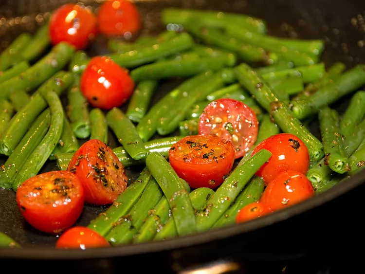

Green Beans with Cherry Tomatoes

These beans are briefly boiled and tossed with cherry tomatoes in a buttery basil sauce to make the most yummy green beans ever! We serve these at Easter Dinner every year but are a delicious accent to any meal
Ingredients
- 1 1/2 pounds green beans, trimmed and cut into 2 inch pieces
- 1 1/2 cups water
- 1/4 cup butter
- 1 tablespoon sugar
- 3/4 teaspoon garlic salt
- 1/4 teaspoon pepper
- 1 1/2 teaspoons chopped fresh basil
- 2 cups cherry tomato halves
Directions
- Place beans and water in a large saucepan. Cover, and bring to a boil. Set heat to low, and simmer until tender, about 10 minutes. Drain off water, and set aside.
- Melt butter in a skillet over medium heat. Stir in sugar, garlic salt, pepper and basil. Add tomatoes, and cook stirring gently just until soft. Pour the tomato mixture over the green beans, and toss gently to blend.